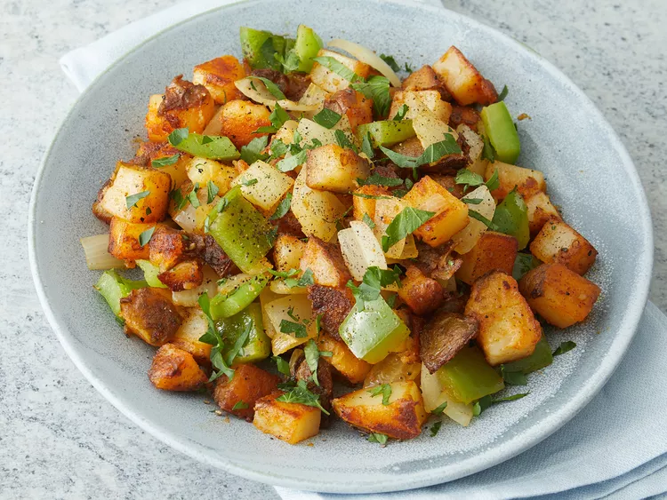

Home
Home-Fried Potatoes

Description
Yummy home-style fried potatoes. Chunky and flavorful fried potatoes with onion, green pepper, and parsley.
Ingredients
- 4 red potatoes
- 3 tablespoons of olive oil, divided
- 1 onion, chopped
- 1 green bell pepper, seeded and chopped
- 1 teaspoon of salt
- ¾ teaspoon of paprika
- ¼ teaspoon of ground black pepper
- ¼ cup of chopped fresh parsley
Steps
- Bring a large pot of salted water to a boil. Add potatoes and cook until tender but still firm, about 15 minutes. Drain, cool, and cut into 1/2-inch cubes.
- Heat 1 tablespoon oil over medium-high heat. Add onion and green pepper. Cook, stirring often, until soft; about 5 minutes. Transfer to a plate and set aside.
- Pour remaining 2 tablespoons oil into the skillet over medium-high heat. Add potato cubes, salt, paprika, and black pepper. Cook, stirring occasionally, until potatoes are browned; about 10 minutes.
- Stir in onion-green pepper mix and parsley. Cook for another minute. Serve hot.
Other recipes